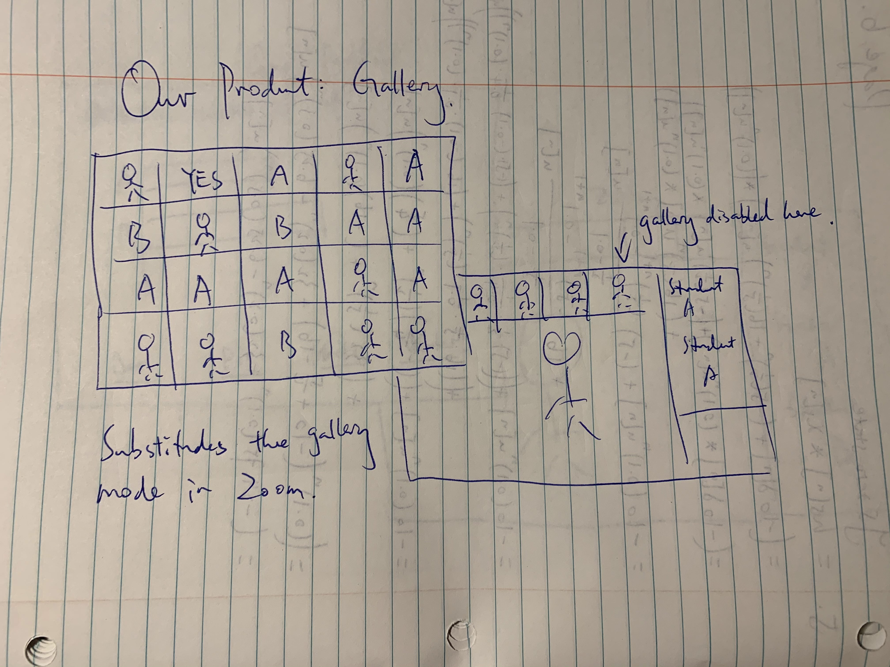
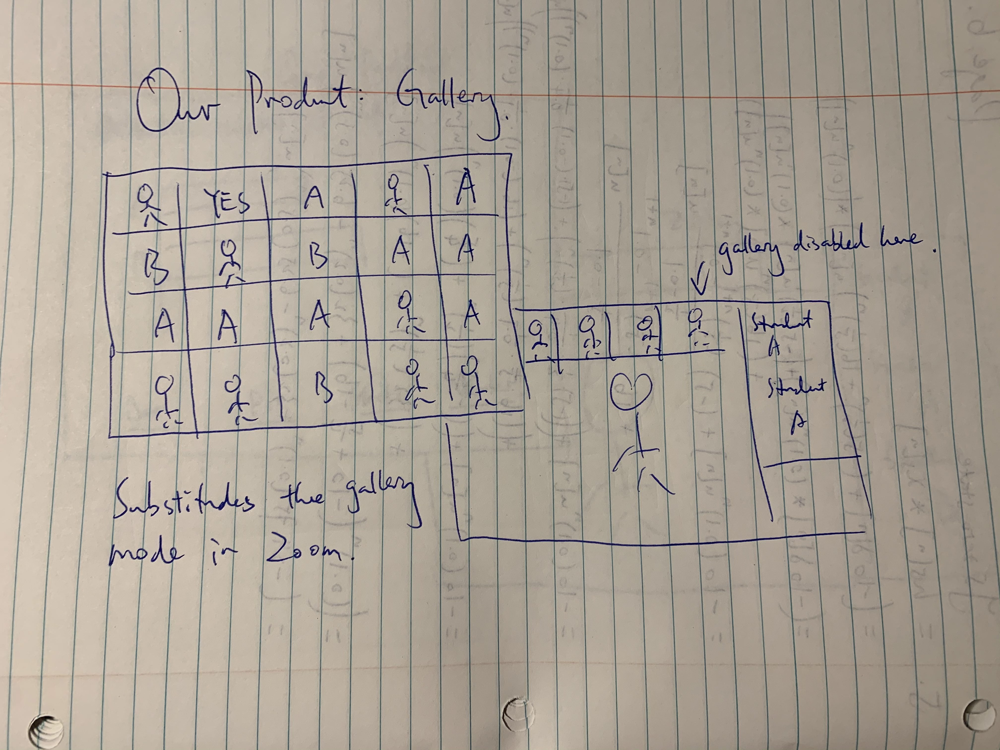

Low Fidelity Prototyping & Test Plan
Design Concepts
Sketches

 5.
6.
7.

8.
9.
10.
5.
6.
7.

8.
9.
10.
More Detailed Sketches
After coming up with atleast 10 improvements to a few favourite sketches.

 6.
- transparent UI floating on top of Zoom window
- full complex mode enabled
- one-click from mini mode to complex mode and vice versa
- activate/deactivate detection of the chat
- provide different visualization methods
- adjust size of window so that it does not distract the lecturer
- adjust arrangements of icons and textboxes
- add more controlling methods such as sliders
- hide window in mini mode so that it blends into zoom window
- window automatically pops up when cursor stops on top of mini mode
6.
- transparent UI floating on top of Zoom window
- full complex mode enabled
- one-click from mini mode to complex mode and vice versa
- activate/deactivate detection of the chat
- provide different visualization methods
- adjust size of window so that it does not distract the lecturer
- adjust arrangements of icons and textboxes
- add more controlling methods such as sliders
- hide window in mini mode so that it blends into zoom window
- window automatically pops up when cursor stops on top of mini mode
Prototypes
Prototype 1: Prototype 2: Prototype 3:
10+10 Discussion
Warning, Long: Peer graders should omit, unless interested
Usability Goals & Benchmark Tasks
Usability Goals
1. The system should seem familiar and therefore be quickly usable.
Users should demonstrate profeciency with the system almost immediately after playing with it for a few moments. Buttons and labels should suggest the appropriate path for actions the user wants complete.
2. The system should be highly customizable.
The visualizations, the applications layout, and the chat should all be easily changed at the users request.
3. The system should not obstruct the users view of zoom and in turn not be too annoying.
The system should be a helping hand to presenters and a tag along to Zoom therefore it cannot take away from the software it aims to help.
4. The system should offer the user a high level of optionality, by default, that is easy to find (without them having to manually make it so).
Multiple options should be offered to a user who doesn't want to manually customize anything. Many preset viewtypes and visualization options.
5. The system should offer feedback as data comes in.
Users shouldn't need to guess what the output will look like they should have an idea of what it will look like before they select there visualization.
Benchmark Tasks
You will find all the below benchmarks tasks test usibility goal 1 (specifically). The ability to perform all these tasks without training could prove how quickly learnable our system is.
1. The user asks a simple yes or no question
This refers to goal 1 (especially), a yes or no question is the basic option of our software and users should be able to do this quickly with almost no experiance.
2. The user can look at what his data looks like in multiple formats before choosing a visualization.
This is there to test usibility goal 5 we want no guess work from the user they should know what their visualization will look like with the data coming in before it is selected.
3. The user can manually customize and/or fix charts
Relating to goal 2 the user should be able to customize the software output to their wishes.
4. The user can select/find the alternative chart types to view data.
Relating to usibility goal 4 the user should be able to find multiple preset chart types to visualize data.
5. The user can find/interact with/follow zoom chat within our application.
Following from usibility goal 3. We don't want our aplication to take away from zoom therefore we included a chat function. This should serve just as well as the zoom chat.
Test Materials
Observer Briefing
User Introduction
Pretest Questionnaire
Training Documentation
Test Task Descriptions
Test Script
Data Collection Sheet
Post-Test Questionnaire
Testing
Pre-Test Questionaire
Testing Examples
To not provide too much information, here you will find test videos of one usibility test session with one of the prototypes. The full session covered the same for the
other protypes. This test specifically was on my roommate as he is in a lab at McGill and frequently runs Zoom meetings regarding this, I had to be in the room to film and I admitedly found it very hard to not answer his questions. Though I tried my best not to and noted any question or times of confusion he had. He understood the system quickly after reading the user introduction that explained it's purpose. Though he is very profecient with technology and understands data visualization as it is one of the concepts he is specializing in.
1. The user asks a simple yes or no question.
2. The user can look at what his data looks like in multiple formats before choosing a visualization.
3. The user can manually customize and/or fix charts
4. The user can select/find the alternative chart types to view data.
Couldn't find other chart types other than 4 given when opening visualize, this protoype would need a redesign to completely succeed with this task.
5. The user can find/interact with/follow zoom chat within our application.
Understood how to use the chart, prototype (unlike others) has no way to write in chat, and didn't know what slow chat button.
Test Results
Discussion on Testing
Prototype 1
Improvements: We need to add a tutorial or a way for users to better understand items. Signifier for the record button and what it does. We need more visualization alternatives and a way to get to them past the first 4. Need many more signifiers on charts to say where you can edit. Lastly its clear there needs to be a way to input to the chart.Need to explain how removing/adding items to the visualization works or add better signifiers.
Prototype 2
Improvements: Many of the same problems as p1 but this one doesn't seem to suffer the flaw of having no way to get to alternatives. Also this option does have a way to input to chart. This prototype needs signifiers or a way to explain how the +,- functions work.